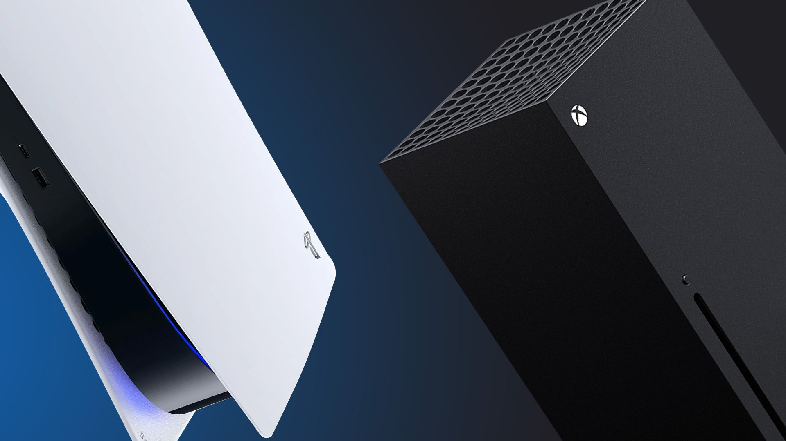
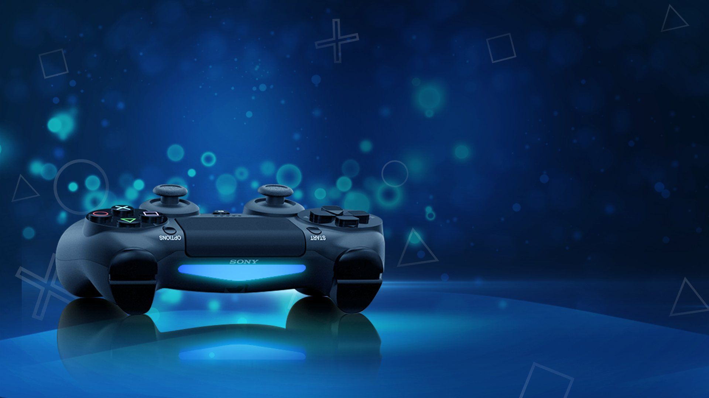

Bienvenue
sur
mon site
Votre guide en ligne pour tout ce qui concerne les jeux vidéo et les équipements de jeu. Si vous êtes un passionné de jeux vidéo cherchant à découvrir les derniers jeux, les consoles les plus récentes et les équipements de jeu les plus populaires, vous êtes au bon endroit. Mon site fournit des informations approfondies sur les dernières sorties de jeux, les critiques et les avis, ainsi que sur les différentes consoles et manettes disponibles sur le marché. Bien que je ne sois peut-être pas à jour avec les dernières tendances en matière de technologie de jeu, je m'efforce de fournir des informations précises et de qualité sur les jeux vidéo et les équipements de jeu.

Quels sont les
meilleurs jeux vidéo
de 2022 ?
Sur mon site, vous trouverez des informations détaillées sur les différents genres de jeux, les studios de développement, les dates de sortie et les plateformes de jeu. Je suis fier de vous offrir une liste complète de jeux pour tous les goûts, mon objectif est de vous aider à trouver les meilleurs jeux pour votre plaisir de jeu. Je crois que chaque joueur mérite de trouver les jeux qui répondent à ses besoins et à ses préférences, c'est pourquoi je mets tout en œuvre pour vous offrir une source d'informations complète et fiable

Quels sont les
meilleures consoles
(fixe et portable) ?
Sur mon site, je fournis des évaluations détaillées des principales consoles de jeu du marché, y compris la PlayStation 5, la Xbox Series X/S, la Nintendo Switch, le steam deck et d'autres encore. Ces évaluations couvrent divers aspects tels que les performances, les fonctionnalités, les graphismes, la convivialité, et bien plus encore. Je m'efforce de fournir des évaluations honnêtes et impartiales basées sur mes propres expériences de jeu ainsi que sur les retours et les commentaires des autres joueurs.
Quels sont les
meilleures
manettes ?
Sur mon site, vous trouverez des informations sur les manettes de jeux de toutes les marques et de toutes les tailles, y compris les manettes PlayStation, Xbox, Nintendo et bien d'autres encore. J'ai également inclus des évaluations et des comparaisons détaillées pour chaque manette, afin de vous donner une idée claire de leurs performances, de leurs fonctionnalités et de leurs prix. Vous trouverez des informations détaillées sur les meilleures manettes de jeu actuellement disponibles sur le marché, ainsi que des analyses, des critiques et des comparaisons approfondies pour vous aider à trouver la manette qui convient le mieux à vos besoins.
